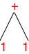
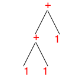

1 Languages and Metafunctions
abstract syntax trees (AST) as the essence of syntax,
the Redex representation of abstract syntax trees, and
Redex metafunctions for programming with abstract syntax.
1.1 Natural Languages
A programming language is in many ways like a natural language. It has a vocabulary and a grammar. The vocabulary is the collection of those “basic words” from which we can compose “sentences” in our language. A sentence in a programming language is an expression or a function; the language’s grammar dictates how to form complete sentences from words. Programmers use the terminology syntax to refer to the vocabularies and grammars of programming languages.
Not all grammatical sentences are meaningful—
Our eventual goal is to explain what sentences mean or, as we say in the world of programming languages, their semantics. As a child you grow into your native language and you grasp its meaning intuitively. As a student of a foreign language, say English, you learn to translate sentences and phrases from the foreign language into your native language. Once you have acquired vocabulary, you learn to relate new foreign sentences to old ones and you thus explain their meaning. Lastly, when you are able to acquire new vocabulary in this intuitive and “embedded” manner, you also pick up idioms and you learn to speak like a native in the foreign language. You begin to understand the pragmatics of the language.
1.2 Programming Languages
For Java, the specification document spells out both the lexical structure (vocabulary) and the syntax (grammar) with a mixture of structured English and formal enumerations. Take a look at the specifications to see how much care and work goes into an exemplary language specification.
class Fahrenheit { |
private double temperature = 0.0; |
public Celsius toCelsius() { |
return 5 * (this.temperature - 32) / 9; |
} |
} |
(define Fahrenheit (class object% [init-field (temperature 0.0)] (define/public (toCelsius) (/ (* 5 (- temperature 32)) 9))))
x = x + 1; |
(set! x (+ x 1))
Since programming language researchers wish to ignore such syntactic differences and focus on models that predict behavior (semantics), they distill syntax to its essence: abstract syntax. Roughly speaking, the elements of an abstract syntax are trees that explain why an element belongs to the language. That is, the tree structure encapsulates the argument why a grammar such as Java’s “blesses” a sentence such as the class definition about.
a tool for writing down abstract syntax trees;
a tool for writing down functions on abstract syntax trees to check basic properties.
1.3 Redex, Quickly
1.3.1 Languages and Term
> (define-language Colors (c red yellow green))
> (term yellow) 'yellow
> (define example1 (term yellow)) > example1 'yellow
> (define example2 (term green)) > (define example3 (term brown))
In general, the way to understand a language definition is to see it as a recipe for generating tree-shaped values, in our domain called terms. In this light the Colors language says that the class of c terms consists of three values: red, yellow, green.
(define-language ArithmeticExpressions (e n (e + e) (e * e)) (n number))
Obviously the first line of e’s definition says that all ns belong to e. Since (term 1) is a number, it is an e. Yeah! The class of es isn’t empty.
- Now the second like is a bit weirder. We know that + is meant to be the literal symbol. So what this means is that we need to find two es: one to put on the left side and one on the right. Lucky us, we have a proof that 1 belongs to e, so
> (term (1 + 1)) '(1 + 1)

As always in CS, we draw trees upside down. - As you may have guessed, you can use the new-found (1 + 1) to generate an even larger e, namely,
> (term ((1 + 1) + 1)) '((1 + 1) + 1)
for example. What you see from this interaction is that Redex uses Racket’s S-expressions to represent such terms. The tree for this second term is deeper and more complex than the first one:
Even though it too looks simple, you should now be able to understand why we call our terms “trees” and soon you will appreciate why we imagine trees when we process terms.
> (redex-match Colors c example1) (list (match (list (bind 'c 'yellow))))
> (redex-match Colors c example2) (list (match (list (bind 'c 'green))))
> (redex-match Colors c example3) #f
1.3.2 Metafunctions
> (define-metafunction Colors successor : c -> c [(successor red) green] [(successor green) yellow] [(successor yellow) red])
> (term (successor yellow)) 'red
> (term (successor brown)) successor: (successor brown) is not in my domain
1.3.3 Testing
> (test-equal (term (successor red)) (term green)) > (test-equal (term (successor red)) (term red))
FAILED :5.0
actual: 'green
expected: 'red
1.4 Designing Metafunctions
Analyze the problem. The result of the analysis is a language definition and an interpretation. The latter explains what the various ASts represent. We often call this language definition a data definition.
Make up some sample phrases using the language definition. They come in handy for several of the following steps.
Formulate a purpose statement. A purpose statement is your concise description of the modeling (programming) task. One line of precise English per function suffices; if the project is large, add a paragraph for the entire project.
Also formulate a function signature (aka contract) using the language definition(s) from step 1.
Illustrate the concise purpose statement from step 2 with functional examples. The purpose of examples is to help you understand what the function actually computes.
Use the data definition from step 1 to design inputs. You should have one per language (non-terminal) clause and alternative. Use the purpose statement to figure out the expected values.
Create a function template, i.e., an outline of the function. An outline isn’t some informal pseudo-code essay, but a transformation of all the knowledge in the data definition into a code layout. See below for some examples; see HtDP for details.
Note: You are not required to show me your function templates in your homework solutions. I will be able to tell from your solution whether you can organize a function.
Define the function. Code.
In most cases this task requires little more than combining the pieces on the right-hand side of each clause of the template. These “combinators” are sometimes elements from the AST language, and sometimes you need simple Racket functions. For the latter, guess and experiment in the interactions area. Or look in the HelpDesk.
Turn the examples into unit tests. Tests confirm whether your functions produce the right outputs for the given inputs. If a test fails, you may have a mistake in the function, in the test, or in both.
Every program (collection of functions) needs a test suite. Whenever you edit your programs, re-run the test suite. Never turn in a program that doesn’t satisfy your test suite.
Atomic and unstructured data, e.g., symbols or chars or booleans, are at the bottom of the chain.
The nest simplest data definition enumerates a finite number of individual pieces of data. The Colors language is an example of this kind.
Next up are fixed-width combinations of data, called structures or records in many programming languages.
Of course, you can also enumerate structures now and mixes of structures and atomic data.
In the introduction to define-language we have already seen a self-referential data definition. You need those as soon as you want to deal with arbitrarily large data, including, for example, natural numbers (0, 1, 2, etc).
For the representation of programming languages, you most often need nests of mutually referential data definitions.
1.5 Example: Shapes
Sample Problem A shape is either a square, or a triangle, or a circle. The description of each shape includes its location in the plane and a color (red, green, or blue). A triangle comes with a specification of the width of its base and its height; a square also comes with a specification of its size; and a circle has a radius. All numbers are natural numbers. Design a function that computes the area of a given shape.
- the language definition and data examples:
(define-language Shapes (s (circle p c n) (square p c n) ; (triangle Position Color Height Base) (triangle p c n n)) (c red green blue) (p (n n)) ; Cartesian positions in the plane (n natural) (a number)) ; for the results (define ex1 (term (circle (3 4) red 10))) (define ex2 (term (square (10 0) green 3))) (define ex3 (term (triangle (0 0) blue 3 4))) (redex-match Shapes s ex1) (redex-match Shapes s ex2) (redex-match Shapes s ex3) The redex-match expressions confirm that these examples belong to the language. - the purpose statement and signature of the metafunction:
; compute the area of a shape (define-metafunction Shapes area : s -> a ...) You see that is why we added a to the grammar. Areas are measured in arbitrary numbers even if the dimensions of the shape are measured in natural numbers. - the functional examples:
; given ex1, area should produce (* pi 10 10) ; given ex2, area should produce 9 ; given ex3, area should produce (* 1/2 3 4) By calculating out the answer, you mentally prepare the coding step. - the template:
(define-metafunction Shapes area : s -> a [(area (circle p c n_radius)) ... (term n_radius) ... (term n_radius) ...] [(area (square p c n_side)) ... (term n_side) ... (term n_side) ...] [(area (triangle p c n_height n_base)) ... (term n_height) .. (term n_base) ...]) The template has as many patterns as there are alternatives in the clause for the (major) input. On the right hand side, we can write down the pieces of data that the pattern provides. The output of the function must be computed from these pieces. - the full definition:
; compute the area of a shape (define-metafunction Shapes area : s -> a [(area (circle p c n_radius)) ,(* pi (term n_radius) (term n_radius))] [(area (square p c n_side)) ,(* (term n_side) (term n_side))] [(area (triangle p c n_height n_base)) ,(* 1/2 (term n_height) (term n_base))]) Note the underlines in pattern variables. The base of the identifier specifies what kind of datum you expect (e.g., n a natural number). The subscript provides a unique name for readability and/or uniqueness (when more than one n occurs in the pattern).On the output side, we escape with , to the Racket level and call the * function on the specified pieces. The nested terms escape back into the Redex level and provide the values from the matched pattern.
- the test:
(test-equal (term (area ,ex1)) (* 10 10 pi)) (test-equal (term (area ,ex2)) 9) (test-equal (term (area ,ex3)) 6) This is the easiest step and the reward for systematic development. When you follow the recipe, you tend to get all test cases thru quickly.